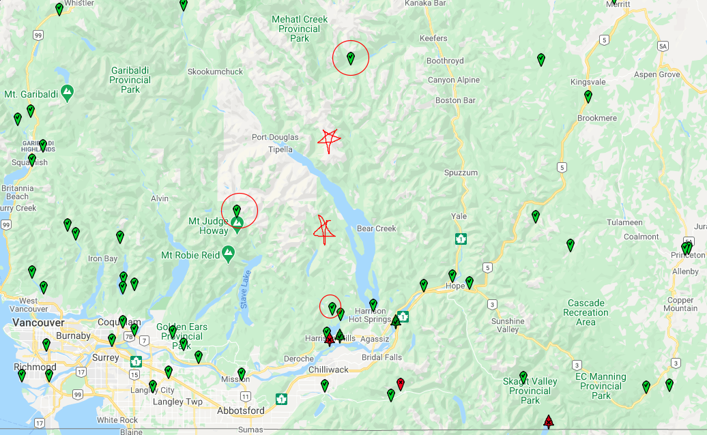

Estimating Long-Term Runoff using Regional Regression¶
In this exercise, we’ll run through a simplified method of estimating runoff at a potential hydropower location in a basin that hasn’t been gauged. We’ll use the Python programming language, we’ll access data from the Water Survey of Canada, and we’ll make a series of estimates of flow based on other rivers in the area where flow has been measured for a long time. We’ll then use the three regional stations to estimate energy at our project location to see how close they are.
The goal is to give you a sense of how much local variability there is in hydrologic conditions in the lower mainland.
Water Survey of Canada is the government organization that maintains a nation-wide network of streamflow monitoring stations. There are roughly 2100 active monitoring stations in Canada, and while this is a large number, it is small in comparison to the number of streams and rivers, and the distribution of stations is biased to developed areas.

Realtime flow monitoring (source: Hamilton, Stuart. (0002). Winter Hydrometry: Real-Time Data Issues.
In addition to the active stations, there are roughly 6000 inactive stations where historical data can be drawn from. This data is free, and openly available to the public through Environment Canada’s Datamart web portal.
Open the datamart in a new window and go to the Map Search. Choose BC as the “Province or Territory” and click on “Go”. A map view of hydrometric stations in BC will render in your browser.
Zoom into the region east of Vancouver, in the region of Harrison Lake, as shown below. There are two stars drawn (excellently) on the map indicating locations we’re interested in for run-of-river hydro.
In order to figure out how much water we might expect in the basins where the stars are drawn, we need to look at long-term measured records in the nearby area.

Map of active stations near Harrison Lake (source: Water Survey of Canada)
Using the map view, retrieve the station ID numbers and store them as strings in different variables. i.e.:
stn1 = '08EA004' <– here the single quote ' surrounding a group of characters makes a string.
# find the three station numbers and store them in three variables
stn1 = ''
stn2 = ''
stn3 = ''
Below we are going to access daily flows for these stations directly from Datamart.
Note: Datamart is for realtime and recent data. Long-term (historical) records are available for these stations using the BC Water Tool.
# you can get daily data for the last month
datamart_link_daily = 'https://dd.weather.gc.ca/hydrometric/csv/BC/daily/'
# you can also get hourly data for the latest 24 hours
datamart_link_daily = 'https://dd.weather.gc.ca/hydrometric/csv/BC/daily/'
# !pip install pandas bokeh
# pandas is a library for manipulating large amounts of data,
# sort of like Excel without a user interface.
import pandas as pd
filename = f'BC_{stn1}_daily_hydrometric.csv'
# import the data for the first station
We want to compare flow at the three stations. Let’s put all of the data together into one dataframe.
# create an empty list
# create a list of the station names
# loop through the filenames and store each dataframe in the list
# concatenate the list of dataframes into a single dataframe
# inner join means to keep only concurrent data (flow values on the same day)
# plot the data
Now let’s compare the three using linear regression.
Background information on Linear Regression.
An excellent library for data visualization is Bokeh.
from bokeh.plotting import figure, show
from bokeh.io import output_notebook
# this makes the figure render within jupyter instead of a new window
output_notebook()
# make a regression plot of two stations
# a regression plot in this case compares flows
# occurring at the same time in two different places
# each point coordinate (x, y) --> (q1, q2)
# retrive long-term data pre-saved in the data folder
lt_dfs = []
for stn in station_list:
# I saved long-term data ahead of time in the 'data/' folder
filename = f'data/{stn}.csv'
df = pd.read_csv(filename, header=13,
parse_dates=['Datetime'], index_col='Datetime',
infer_datetime_format=True)
# how many analysis types are there?
df.head()
---------------------------------------------------------------------------
NameError Traceback (most recent call last)
<ipython-input-10-00451bbd78d2> in <module>
2
3 lt_dfs = []
----> 4 for stn in station_list:
5 # I saved long-term data ahead of time in the 'data/' folder
6 filename = f'data/{stn}.csv'
NameError: name 'station_list' is not defined
Find the long-term mean annual discharge (MAD) for these three sites.
These mean annual flow numbers look pretty similar.
Can we just use this number for our basin and calculate energy?
Unit-Area Runoff¶
How do the three stations compare on a unit-area basis?
Unit area runoff is commonly expressed in \(\frac{L}{s \cdot km^2}\) or \(mm\).
Convert Volume to volmeteric flow units¶
Flow is typically measured in \(\frac{m^3}{s}\), but runoff is sometimes reported in \(mm\) (same as precipitation), so convert \(\frac{mm}{day}\) precipitation to \(\frac{m^3}{s}\) runoff (ignore evaporation, interception, infiltration, etc.).
stn_das = {'08MF065': 712,
'08MH147': 290,
'08MG001': 383}
# make a copy of the flow dataframe
lt_ur = lt_df.copy()
for stn in station_list:
lt_ur[stn] = 1000 * lt_ur[stn] / stn_das[stn]
lt_ur.head()
Plot daily flows with bokeh for more interactivity¶
p = figure(width=800, height=400, title=f'Unit Runoff Comparison', x_axis_type='datetime')
p.line(lt_ur.index, lt_ur[stn1], legend_label=stn1, color='green', alpha=0.5)
p.line(lt_ur.index, lt_ur[stn2], legend_label=stn2, color='orange', alpha=0.5)
p.line(lt_ur.index, lt_ur[stn3], legend_label=stn3, color='blue', alpha=0.5)
p.xaxis.axis_label = "Date"
p.yaxis.axis_label = "Unit Runoff [L/s/km^2]"
p.legend.click_policy = 'hide'
show(p)
Create an Annual Runoff Hydrograph¶
Looking at daily runoff values is informative for the daily level, but to get an idea of long-term trends, average the data over months and plot monthly values for the ‘average’ year.
The unit runoff plot tells a very different story of water availability!¶
Now take the area you estimated earlier for your basin.
i.e. 80 km^2
And using each of the three regional stations, calculate an approximate flow series for your project location using the ratio of drainage areas. Since we’ve already converted the flow series to unit area runoff, we can just multiply by \(\frac{Area}{1000}\) to get back to \(\frac{m^3}{s}\).
Estimate Annual Energy Production¶
Using the three regional stations, estimate the long-term annual energy based on a design flow equal to the MAD.
Calculate monthly energy for a typical year for each estimated series¶
Calculate Expected Annual Energy (and Revenue)¶
Assume revenue is $100 per MWh.